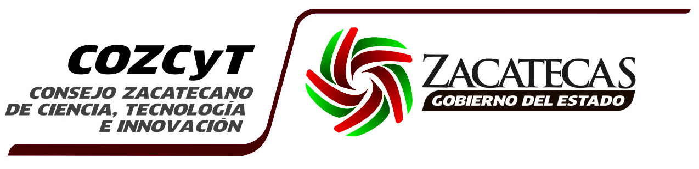

Streaming
Divulgación Científica y Tecnológica
Sorry, your browser doesn't support HTML5 audio.
cozcyt
labsol
Horarios
10:00 am
11:00 am
12:00 am
13:00 pm
Sorry, your browser doesn't support HTML5 video.
Síguenos en twitter
Tweets por @EAlexisTapia